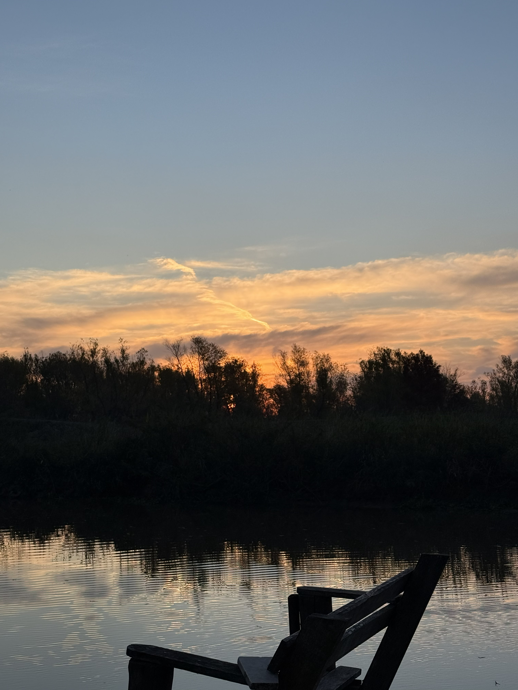

Atardecer en Entre Rios

Esta foto fue sacada sobre un muelle durante unas vacaciones en Entre Rios, en Islas del Ibicuy. Se encuentra pasando en segundo puente Brazo Largo.
- Puesta del sol: 17:45
- Configuracion de la camara: ISO 64, 53 mm, 0 ev, f 1.78, 1/1543 s